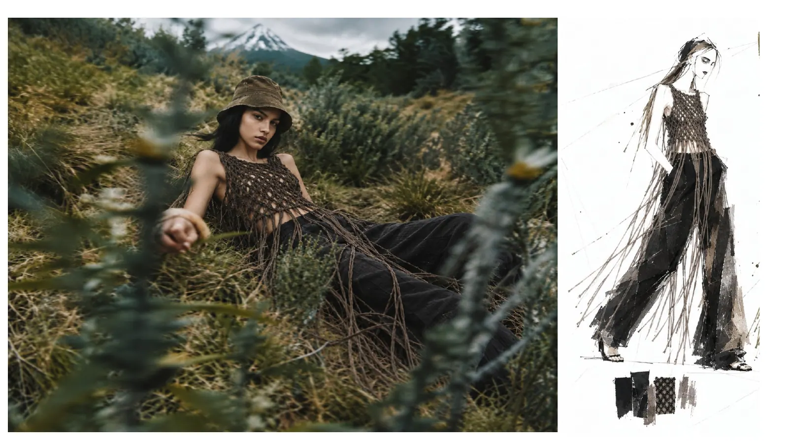

FASHION · BRAND · CREATIVE TECHNOLOGY
WANG
QIUNA.
王秋娜 / 设计、商业与数字创作
以服装设计为起点，连接品牌经营、商业策划、文化教育与 AI 数字创作。
EXPLORE SELECTED WORK ↗
SELECTED WORKS 01 / CREATIVE ARCHIVE
01 / PORTFOLIO
Selected Works.
精选创作与职业项目 · 点击卡片查看作品详情
02 / WHAT I DO
Interdisciplinary
Practice.
01
Fashion & Textile
服装设计、面料与纹样研究、立体裁剪、品牌产品开发
02
Brand & Commerce
品牌经营、实体零售、商业活动与生活方式空间策划
03
AI & Digital Creation
AI漫剧资产、新闻内容编辑、网页制作与数字视觉表达
04
Education & Culture
服装教育、传统服饰文化与儿童美育课程研究
03 / ABOUT ME
Creative by
Experience.
从设计到商业，从实体零售到数字创作。
毕业于北京服装学院服装与服饰专业，拥有16年服装品牌经营、实体商业运营与团队管理经验。长期关注服装设计、品牌定位、消费体验、文化创意以及AI在创作与商业场景中的应用。
希望以跨领域经验，将设计审美、运营执行和新技术连接起来，创造能够落地的作品与体验。
04 / GET IN TOUCH
Have a project
in mind?
欢迎交流服装设计、品牌合作、商业项目与数字创作机会。
wangqiuna@126.com ↗